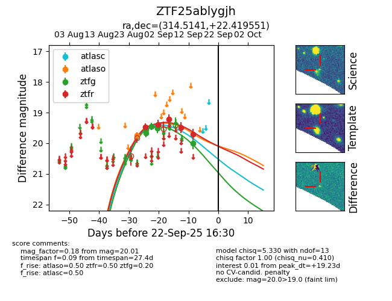
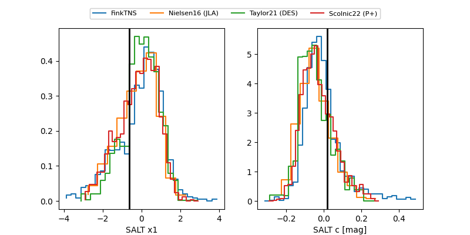

FINK: ZTF25ablygjh
Lasair: ZTF25ablygjh
ALeRCE: ZTF25ablygjh
ZTF25ablygjh (ztf,fink)
equatorial (ra, dec) = (314.5141,+22.41955)
galactic (l, b) = (68.4010,-14.94285)


last atlasc=19.52, atlaso=19.74, ztfg=20.01, ztfr=19.70
1 atlasc, 1 atlaso, 6 ztfg, 5 ztfr detections